Quiénes Somos
Una congregación cristiana apostólica cimentada en la verdad de la Palabra de Dios, dedicada a proclamar el Nombre de Jesús y restaurar familias en Maldonado.
Una Obra Nacida en la Fe
La Iglesia Evangélica Apostólica del Nombre de Jesús (IEANJESÚS) es una comunidad de creyentes con presencia internacional en más de veinte naciones. En Maldonado, Uruguay, la congregación se ha desarrollado como un espacio acogedor, donde vecinos, jóvenes, niños y adultos mayores encuentran un refugio espiritual y una familia fraterna.
Desde nuestros inicios, el propósito no ha sido levantar una estructura religiosa fría, sino establecer un testimonio vivo del amor de Cristo en cada hogar a través de cultos de adoración, grupos celulares barriales y servicio social a quienes más lo necesitan.
Pastor Franklin Salas
El Pastor Franklin Salas es misionero, predicador y consejero bíblico. Junto a su familia lleva adelante un experimentado ministerio con el respaldo de Dios.
Su labor se ha caracterizado por la enseñanza clara de la Palabra de Dios, la formación de discípulos y el fortalecimiento de la Iglesia. Su mensaje busca llevar a las personas a una relación más profunda con Jesucristo y a vivir una fe práctica. Además, el Espíritu Santo respalda su ministerio con señales y sanidades divinas.
También comparte enseñanzas bíblicas mediante las redes sociales y su canal de YouTube, alcanzando a miles de personas en distintos países. Su propósito es continuar anunciando el evangelio y sirviendo a la obra de Dios.
03 / DOCTRINA APOSTÓLICA
En qué Creemos
Nuestra doctrina se fundamenta exclusivamente en las Sagradas Escrituras (la Santa Biblia), inspiradas por el Espíritu Santo:
1. La Unicidad de Dios
Creemos en un solo Dios eterno, invisible, todopoderoso y creador de todas las cosas, quien se manifestó plenamente en carne humana en la persona de Jesucristo para redimir a la humanidad (1 Timoteo 3:16; Juan 1:1, 14; Deuteronomio 6:4).
2. El Bautismo en el Nombre de Jesús
Creemos en el bautismo bíblico por inmersión completa en agua, administrado en el glorioso Nombre de Jesucristo para el perdón y remisión de los pecados, conforme a la ordenanza apostólica (Hechos 2:38; Hechos 8:16; Hechos 19:5).
3. La Promesa del Espíritu Santo
Creemos en el bautismo del Espíritu Santo como una experiencia viva para el creyente hoy, manifestada con la señal inicial de hablar en nuevas lenguas según el Espíritu concede expresarse (Hechos 2:4; Hechos 10:44-46).
4. Salvación por Gracia y Vida Santa
La salvación es un don inmerecido de Dios mediante la fe en la obra redentora de Jesucristo en la cruz. Llamamos a cada creyente a vivir una vida consagrada, íntegra y de amor hacia su prójimo (Efesios 2:8-9; Hebreos 12:14).
¿Deseas acompañarnos en un culto?
Nuestras puertas están abiertas para ti y tu familia. Ven a compartir un tiempo de adoración sincera y estudio de la Palabra.
PLANIFICA TU VISITAEmprendimientos de Nuestra Comunidad
Conoce algunos de los emprendimientos que forman parte de nuestra comunidad y que apoyan este espacio.
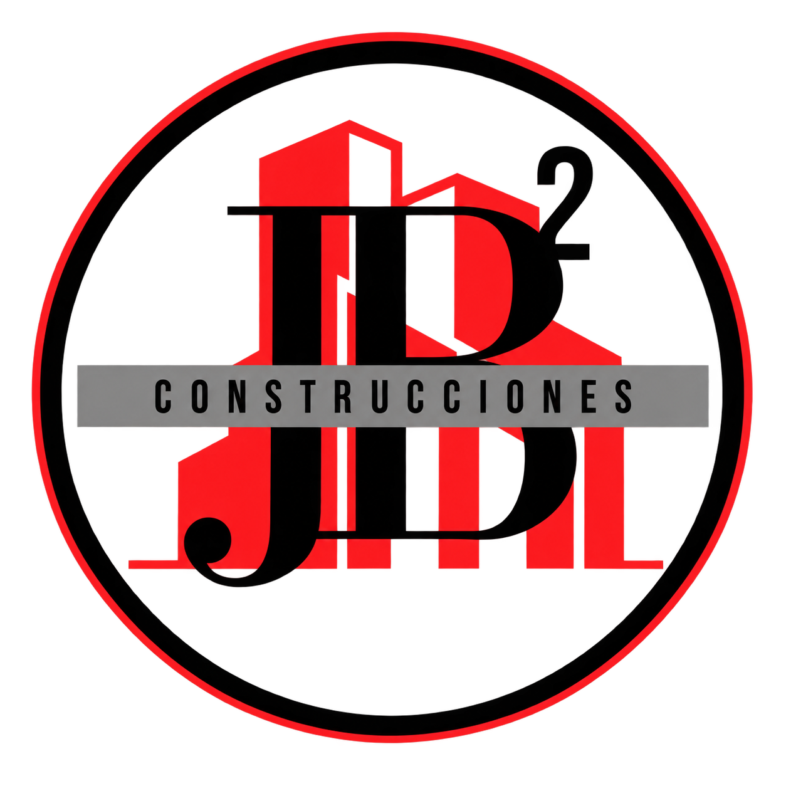
Este espacio reconoce a emprendimientos de nuestra comunidad que colaboran con el mantenimiento de este proyecto digital.
Repertorio Fotográfico
“Nuestra iglesia, en imágenes.”
Algunos momentos que reflejan la vida, la comunión y la obra de nuestra iglesia.
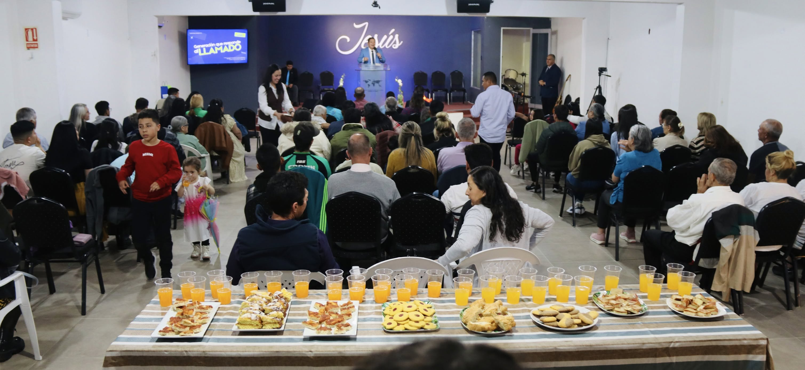
VER FOTO ↗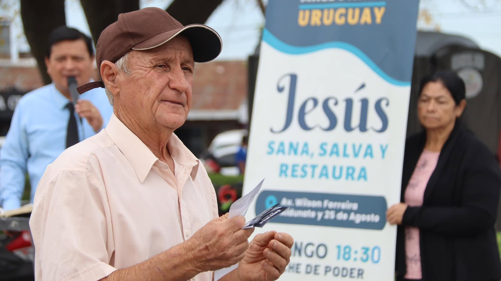
VER FOTO ↗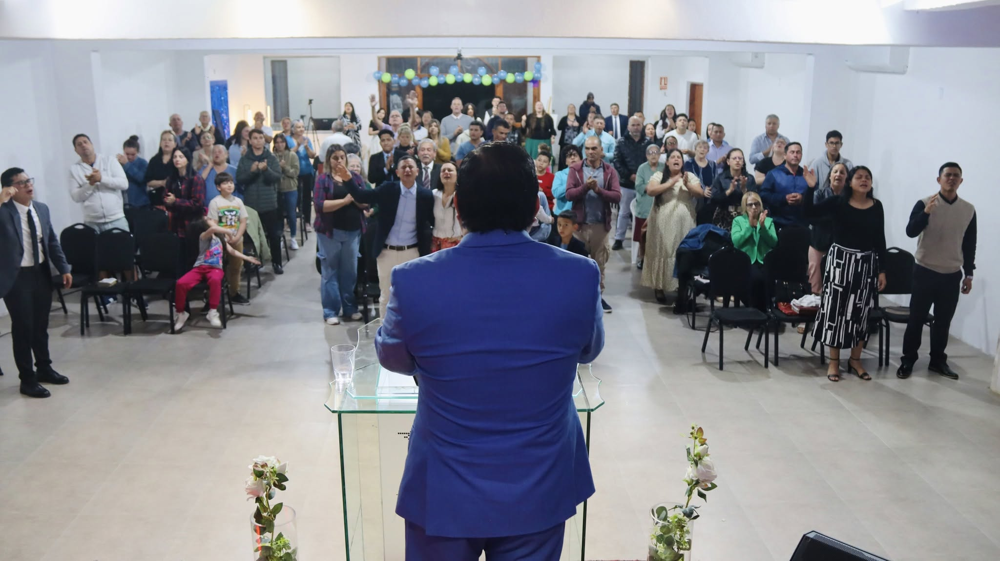
VER FOTO ↗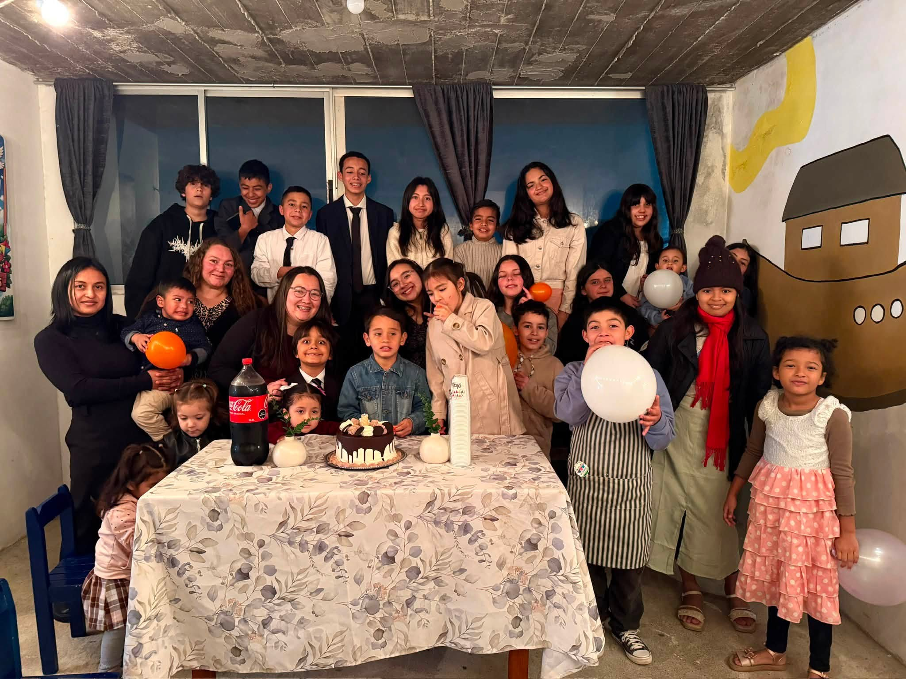
VER FOTO ↗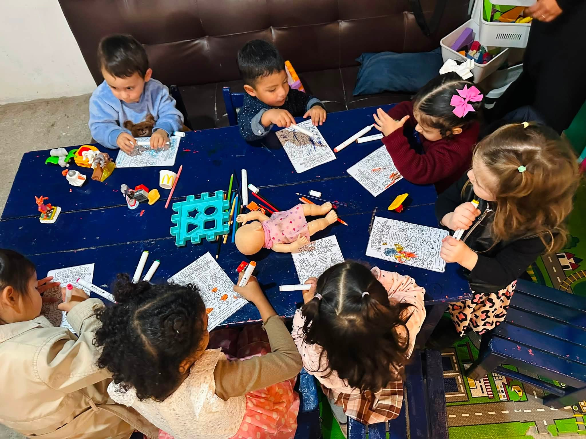
VER FOTO ↗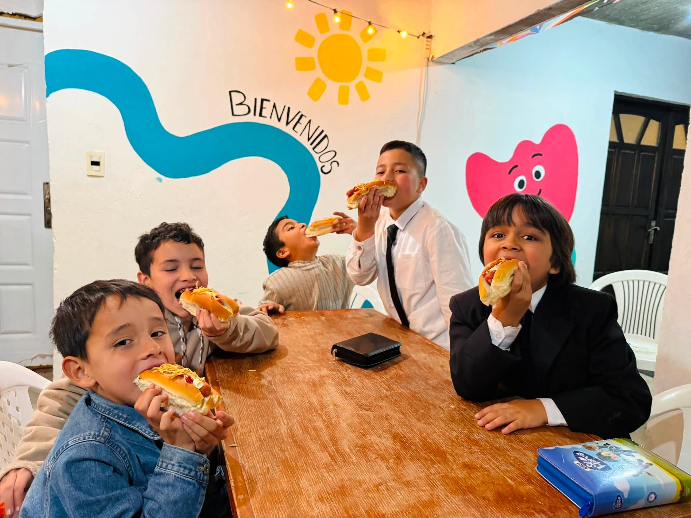
VER FOTO ↗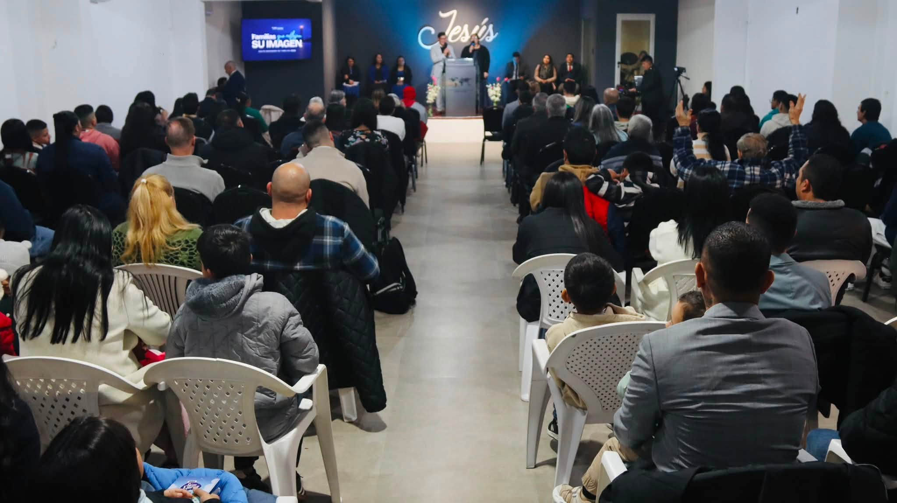
VER FOTO ↗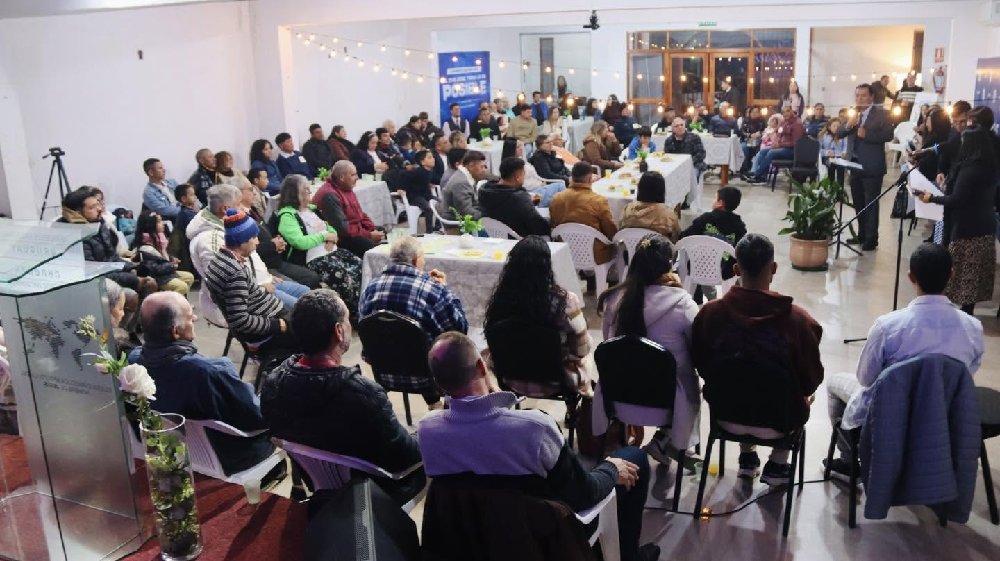
VER FOTO ↗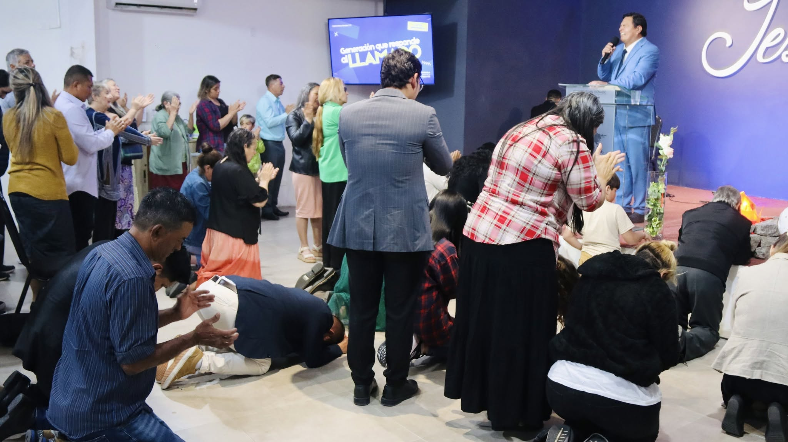
VER FOTO ↗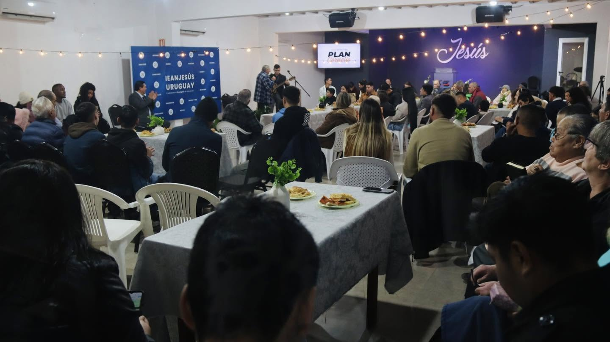
VER FOTO ↗